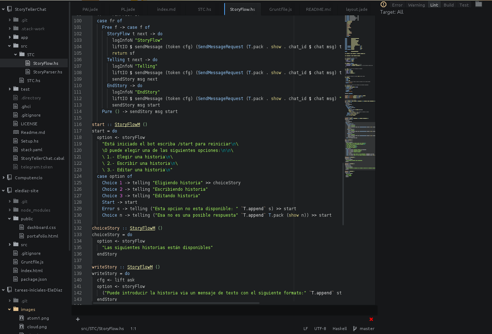

Es un intérprete Javascript del lado del servidor que cambia la noción de cómo debería trabajar un servidor. Su meta es permitir a un programador construir aplicaciones altamente escalables y escribir código que maneje decenas de miles de conexiones simultáneas en una sólo una máquina física.
Para llevar a cabo la instalación de NodeJS en linux se puede proceder de diversas maneras; se puede optar por instalarlo via gestionardor de paquetes de la distro que se usa puede no estar(En mi caso uso Antergos, una variante de Archlinux) o por medio del binario que se puede descargar en la página oficial.
Yo he optado por usar el gestionador de paquetes.
sudo pacman -Syu nodejsPara iniciar el REPL(Read-Eval-Print-Loop) de Javascript incorporado en NodeJS, ejecutamos node en un terminal del sistema. Con ello ya podemos interpretar código Javascript directamente. Como se muestra:
Para complementar el lenguaje están las librerias ya existentes, estas pueden ser obtenidas con el comando npm el cual viene con el paquete de NodeJS ya preinstalado.
Antes de comenzar a instalar los paquetes se debe hacer diversas configuraciones para evitar instalar los paquetes como administrador usando sudo. Les recomiendo seguir los siguientes pasos explicados de forma resumida, pero que pueden encontrar más información en esta dirección
mkdir "${HOME}/.npm-packages"
npm en su archivo de configuración ~/.npmrc donde se localiza el directorio a guardar los paquetes globales. Añadiendo la siguiente línea
prefix=${HOME}/.npm-packages
ZSH. Con lo cual es ~/.zshrc pero si fuese bash seria ~/.bashrcNPM_PACKAGES="${HOME}/.npm-packages"
PATH="$NPM_PACKAGES/bin:$PATH"
# Unset manpath so we can inherit from /etc/manpath via the `manpath` command
unset MANPATH # delete if you already modified MANPATH elsewhere in your config
export MANPATH="$NPM_PACKAGES/share/man:$(manpath)"source ~/.bashrc en el caso de tener bash como shell. Los cambios se van a cargar cada vez que se inicie la shell correspondiente.Como recomendación les propongo instalar grunt y express.
npm install -g grunt-cli
npm install -g express
Para poder desarrollar de manera agradable se usan las siguientes funcionalidades incluidas en el paquete instalado
Lo primero es crear un paquete ejecutamos npm init esto nos permite establecer las dependencias nombre del paquete y otras diversas opciones que se quedan grabadas en el fichero package.json en el mismo directorio que se ejecutó el comando.
Para añadir dependencias al proyecto se puede hacer directamente con un comando
npm install package-name --save-dev
Como editor se puede eligir Atom, este biene con muchas funcionalidades y capacidad de instalar plugins. Pero si se prefiere algún clásico como Emacs o Vim. En mi caso es emacs con spacemacs principalmente para generar apuntes en formato org. 
Dado que vamos a utilizar el formato Markdown es bueno saber que en Atom podremos obtener una preview del contenido de nuestro fichero Markdown ya que incorpora el formato GitHub Markdown con el comando:
Comando
- Markdown preview
ctrl+shift+m- Markdown export to HTML
Save As HTML
También se puede configurar grunt para automatizar el proceso y darle una mayor personalización al formato de salida un ejemplo de configuración es este repo.
Markdown es un lenguaje de marcado ligero, lo vamos a utilizar en el editor de texto Atom ya que incorpora por defecto este formato y podremos obtener un live preview mientras vamos desarrollando además de poder exportarlo a HTML sin la necesidad de usar un conversor adicional.
Sintaxis:
Encabezados
# Encabezado H1
## Encabezado H2
### Encabezado H3Tipografía
**Negrita**
*Cursiva*
> Citas
Parrafo separar por lineas en blanco
`Codigo`Recursos

* [Links](https://example.com)Listas
1. Lista 1
2. Lista 2
* Lista 1
* Lista 2Recursos: